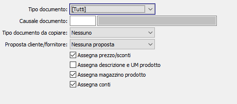

Copia righe documenti
La configurazione “Copia righe documento” contiene la configurazione delle opzioni che vengono proposte nella funzione di copia righe documento presente sui documenti.

Per tutti i documenti, per tipo documento o per tipo documento/causale, è possibile specificare se proporre o meno i seguenti campi:
tipo documento da cui copiare
cliente intestatario del documento, con possibilità di modifica o meno
assegna prezzo/sconti
assegna descrizione e UM prodotto
assegna magazzino prodotto
assegna conti